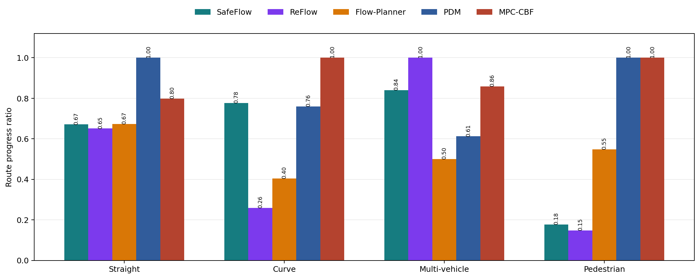
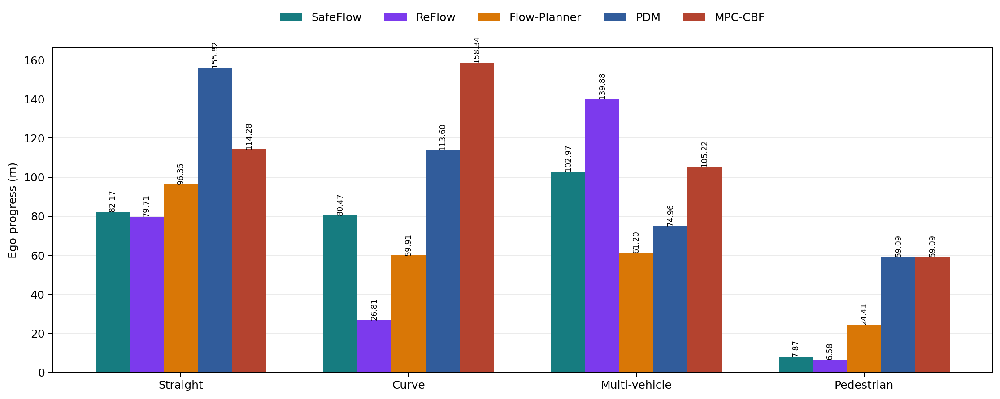
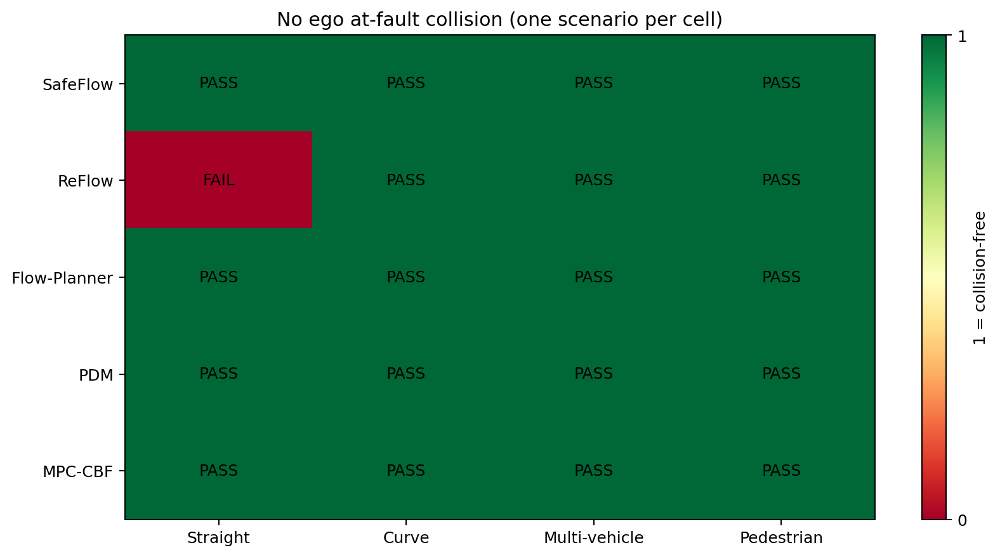
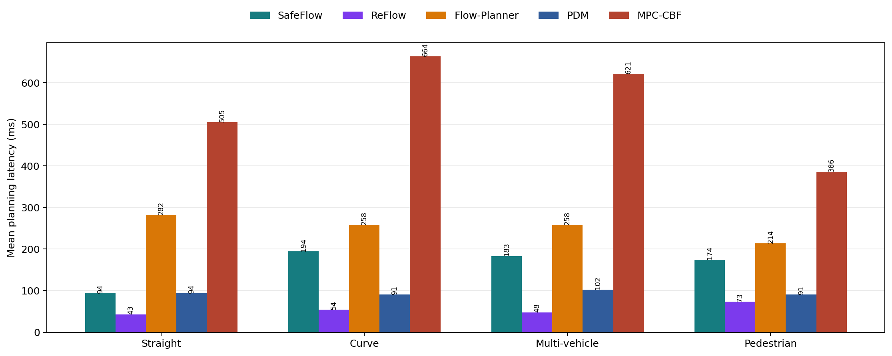
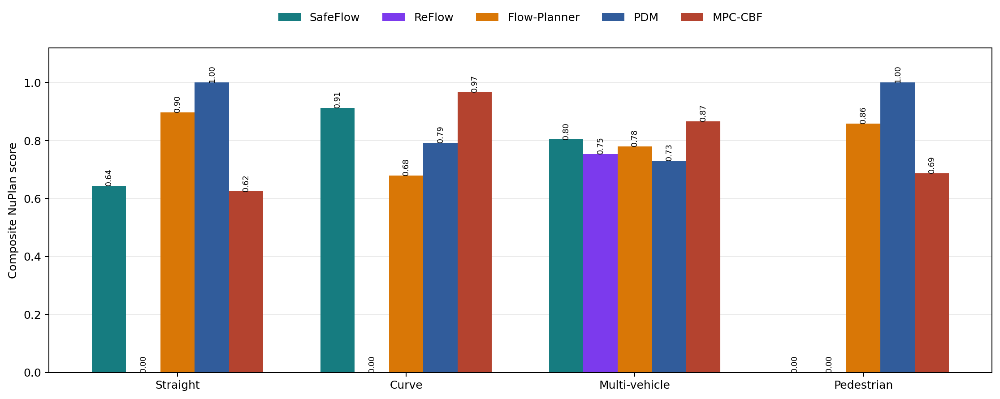

生成日期：2026-08-27
实验设置：每个规划器在相同的四类本地场景中运行 1 个 scenario，使用 CPU，闭环非反应式交通。
ego_is_making_progress=False，因此不能把这个结果描述为“避障成功通过”。straight_overtake.nuboard 使用了额外的 overtake wrapper，必须单独标注，不能作为纯 Flow-Planner 消融结果。1/1 = 100% collision-free，不等同于统计意义上的避障概率。
图 1：ego_expert_progress_along_route_ratio。它衡量自车实际沿专家路线推进了多少，而不是单纯仿真是否结束。

图 2：自车沿专家路线的实际推进距离。不同场景的专家路线长度不同，因此应优先比较同一场景内的规划器，而不要直接比较不同场景的米数。
| 场景 | SafeFlow | Flow-Planner | PDM |
|---|---|---|---|
| 直道 | 0.671 / 82.17 m | 0.673 / 96.35 m | 1.000 / 155.82 m |
| 弯道 2 车 | 0.777 / 80.47 m | 0.404 / 59.91 m | 0.760 / 113.60 m |
| 多车 | 0.841 / 102.97 m | 0.500 / 61.20 m | 0.612 / 74.96 m |
| 行人 | 0.177 / 7.87 m | 0.548 / 24.41 m | 1.000 / 59.09 m |

图 3：NuPlan 的 no_ego_at_fault_collisions。当前保存的 12 个结果均为无自车责任碰撞，但由于每个场景只有一次运行，该图不能支持“真实避障概率为 100%”的结论。
所有当前结果的共同点：
drivable_area_compliance = 1.0；driving_direction_compliance = 1.0；time_to_collision_within_bound = 1.0，这是通过/未通过指标，不是实际的最小 TTC 秒数。舒适性并不与安全性完全一致：
这说明规划器可能通过更急的横向或纵向修正换取路线推进和避障空间。安全、完成度和舒适性需要同时报告。

图 4：compute_trajectory_runtimes_mean，单位为毫秒。
| 场景 | SafeFlow | Flow-Planner | PDM |
|---|---|---|---|
| 直道 | 94.3 ms | 282.5 ms | 93.6 ms |
| 弯道 | 194.3 ms | 258.2 ms | 90.8 ms |
| 多车 | 183.0 ms | 258.0 ms | 102.1 ms |
| 行人 | 174.4 ms | 213.6 ms | 90.5 ms |
四组场景的仿真时间是固定 horizon：直道、弯道、多车约 14.8 s，行人约 11.8 s。因此 runner_report.duration 是机器运行时间，不能作为自车完成任务的时间。当前可复核的结论是：
如果“时间”指单步规划推理时间，PDM 最快，SafeFlow 次之，Flow-Planner 最慢；如果“时间”指首次避障或首次超车时间，当前标准指标还没有记录，需要额外事件检测。

图 5：NuPlan 聚合 score。该 score 是多个评价项的组合，不应替代碰撞率、路线完成度和延迟分别报告。
SafeFlow 的优势体现在显式安全约束和多车场景中的路线推进。多车实验达到 102.97 m，且无自车责任碰撞。行人实验则表现为保守等待：它牺牲了路线完成度，换取了不与行人发生冲突。
直道第二次运行使用了 SINGLE_AGENT_VEHICLE_POSITION_SCALE=0.80。第一次默认位置压缩为 0.35 时发生了车辆碰撞，因此第一次结果没有纳入本报告。弯道运行中出现过一次 loopy path 异常，随后使用了 collision-checked safety fallback；最终闭环无碰撞，但这应作为实现行为记录在实验说明中。
当前使用的是原生 Flow-Planner checkpoint。它在四个保存结果中均无自车责任碰撞，且都保持在可行驶区域内，但路线完成度低于 PDM，尤其是弯道和多车场景。原生 checkpoint 并不包含显式 overtake objective，因此减慢前车后可能跟车或减速，而不是自动完成超车。
straight_overtake.nuboard 使用了显式换道、碰撞检查和超车 wrapper，适合展示“带安全 wrapper 的超车”，但不应与原生 checkpoint 放在同一个公平消融列中。
PDM 在当前四个场景中平均路线完成度最高，同时单步规划延迟最低。直道和行人场景达到 route ratio 1.0。弯道和多车场景虽然无碰撞，但舒适性为 False，说明其候选轨迹选择在复杂交通中可能产生较强控制动作。
Table 3 反映的是训练/模型组件消融，不是上述四个 NuBoard 场景的直接评价。完整配置的代表性结果为：
CLS-NR 94.07
S-CR 99.22
S-Area 99.22
S-PR 95.06
S-Comfort 91.09
Loss Selector 1.03
Loss Generator 1624.5
主要含义：
Table 4 对比 IL/RL loss，以及 Mode Dropout、Selector Side Task、Ego-history Dropout 和 Backbone Sharing。截图中 IL 完整配置和较好 RL 配置可以概括为：
| 指标 | IL | RL | RL - IL |
|---|---|---|---|
| CLS-NR | 93.41 | 94.07 | +0.66 |
| S-CR | 98.85 | 99.22 | +0.37 |
| S-Area | 98.85 | 99.22 | +0.37 |
| S-PR | 93.87 | 95.06 | +1.19 |
| S-Comfort | 96.15 | 91.09 | -5.06 |
因此 Table 4 的合理结论是：
当前每个实验只有 1 个 scenario，建议正式实验至少使用多个日志和随机种子。需要新增的行为级指标包括：
建议最终论文使用如下表述：
在当前单场景测试中，三种规划器均实现了无自车责任碰撞，但该结果仅代表 1/1 场景通过，不能解释为具有统计意义的避障概率。PDM 具有更高的路线完成度和更低的规划延迟；SafeFlow 在多车场景中表现出较好的安全约束和路线推进能力，但在行人场景中采取了保守等待策略；原生 Flow-Planner 能保持无碰撞和可行驶区域约束，但缺少稳定的主动超车行为。
重新生成图表：
/new_world/cockatiel/miniconda3/envs/nuplan_clean/bin/python \
ablation_analysis/generate_report.py